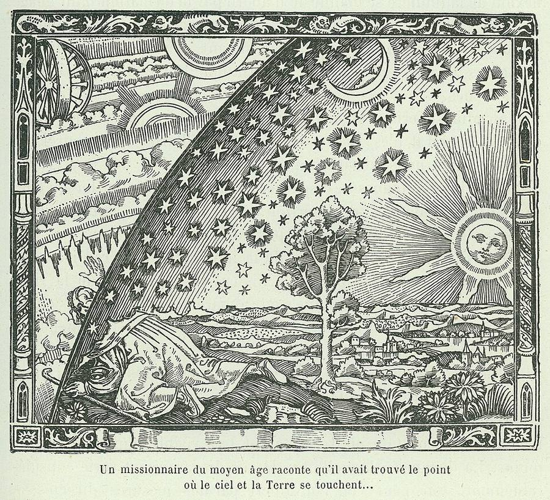

Lost civilizations, secret societies, banned books and Bible codes: every claim checked against the sources.
Every claim checked against the sources
Atlantis, the Templars, the Book of Enoch, Bible codes and the Illuminati, sorted into what the evidence supports, what is argued and what is myth. Every card gives its verdict, and every Bible figure is counted live from the text.

Loading the claims…
Each arc joins two verses that readers have voted as cross-references. The bar along the bottom is the Bible in canonical order, one segment per book. Arc color shows how far the reference travels. Click a book on the bar to isolate its links.
Total votes on references pointing at the verse.
Total votes on references between two different books.
Every book against every other: a row is the book a reference starts in, a column the book it points to. Darker squares carry more votes. Click a square for its strongest references.
From the White Sands footprints to the Dead Sea Scrolls, across the Bible's world and the religions and mysteries around it. Scroll down and the map follows: it flies between places, journeys draw themselves in, and the year runs with you. Dates before about 900 BC are traditional or disputed, and each card says so.
The fewest cross-reference hops from one verse to another. Links with fewer votes than the minimum are ignored. At each hop the strongest link wins a tie.
Climb from the start verse to the goal using only cross-references with 5 or more votes. Today's ladder is the same for everyone. Par is the shortest possible route.
Five questions, the same for everyone today, and every answer is worked out from the text.
Popular beliefs about what the Bible says, checked against the King James text. The counts on each card are computed live from the text on this page.
Computed from the 1769 King James text used throughout this page.
Each tick is a verse containing the word, laid out from Genesis to Revelation.
Hebrew Genesis uses two main names for God: YHWH and Elohim. The American Standard Version (1901) keeps them apart as "Jehovah" and "God". Chapter 1 never uses YHWH, and chapter 2 switches to "Jehovah God". In the 1700s and 1800s, shifts like this led scholars to propose that the first five books combine older sources. The best-known form, the documentary hypothesis, was set out by Julius Wellhausen in 1878.
The pattern is real. Whether it shows separate written sources is still debated, and many scholars today prefer other models of how the books were composed. Counts of whole words in the ASV; "Lord" (Adonai) is not counted.
Matthew, Mark and Luke share a great deal of material, often word for word. The most common explanation is that Mark was written first and Matthew and Luke both used it. Matthew and Luke also share material that is not in Mark, which scholars attribute to a lost source called "Q".
Matthew repeatedly says an event happened to fulfil a prophecy. Here is each of those passages next to the Old Testament verse it draws on, using the highest-voted cross-reference. Some fit cleanly; for others the source or the reading is debated, and the note says how.
Chronicles retells much of Samuel and Kings, often word for word, so where the two give a different number for the same thing it stands out. Each pair below is checked against the text when the data is built. Many differences are a factor of ten or a confusion between similar-looking numbers, the kind of slip copyists make, and some modern translations correct a few of them from other manuscripts.
Average emotional tone per word, scored with the VADER sentiment word list. Bars above the line are more positive, bars below more negative. Click a bar to see that book chapter by chapter.
VADER was built for modern English and misses archaic words, so treat this as a rough sketch. Short books swing furthest because they have fewer words to average.
Lifespans as the text states them, parsed from the number words in each verse. They fall from the patriarchs before the flood to the “threescore years and ten” of Psalm 90.
Matthew 1 traces Jesus from Abraham; Luke 3 traces him back to Adam. They agree from Abraham to David, then follow different sons of David and disagree on Joseph's father. Since ancient times readers have proposed explanations, such as one list following Mary's line.
Every person in the Bible with their family ties, from the Theographic Bible database. Dates are Theographic's estimates.
The same verse in six public-domain English Bibles. Words that differ from the King James are highlighted.
Loading translations…
The KJV New Testament was translated from Greek printed editions based on late manuscripts. Older manuscripts found later, such as Codex Sinaiticus and Codex Vaticanus, lack these verses, so the American Standard Version (1901) leaves them out, as most modern Bibles do or move them to footnotes.
The KJV uses one English word for four different originals: Hebrew Sheol, the grave or world of the dead; Greek Hades, its usual translation; Gehenna, the valley of Hinnom outside Jerusalem, used by Jesus for punishment; and Tartarus, the Greek prison of the Titans. Young's Literal Translation keeps the original words, so lining it up with the KJV shows what each became. Click a bar for the verses.
How often each number word appears in the KJV. Seven, ten and twelve stand far above their neighbors. That patterning is real and deliberate: the authors used those numbers symbolically, as in the seven days of creation, the Ten Commandments and the twelve tribes. Forty, often called the Bible's number of testing, turns out no more common than thirty or fifty.
Gematria gives every letter a number and adds up words. Pick a number and see how many KJV phrases of one to four words add up to it. With hundreds of matches for almost any number, a single match proves nothing.
The Bible does contain deliberate wordplay. These two kinds are documented and accepted by scholars.
Every place the text names, with its most likely modern location. Pick a book to see where it happens, or a disputed site to see every location scholars have proposed for it.
Scripture and ancient writing from Mesopotamia to the Book of Mormon, all in public-domain translations, ordered by when they were written. Each book shows who translated it, because translators shape how alike two books sound.
Loading the library…
Each coloured arc is a known parallel between two passages: a quotation, the same story, the same law or saying, or a similar idea. Thin grey arcs are computed shared wording: Book of Mormon verses that repeat a KJV verse, and Apocrypha verses that retell one. Click an arc to read both passages; click a book's name to see only its connections.
Share of the world's population in 2020, from the Pew Research Center's 2025 study of 201 countries and territories.
The same figures run through the Bible, the Quran and the Book of Mormon. Whole-word counts in the KJV, Marmaduke Pickthall's 1930 English Quran and the 1830 Book of Mormon, computed in your browser. The Quran retells many Bible stories. Mary is the only woman it names, and a whole sura carries her name; the New Testament's count covers several different Marys.
| Loading the Quran and the Book of Mormon… |
Joseph Smith published the Book of Mormon in 1830 as a translation of golden plates written by ancient Americans. Matching each of its verses against every KJV verse shows how much of it is KJV wording.
Pickthall's 1930 translation, the first by an English Muslim and now in the public domain. His English is close to the KJV's, so "Closest Bible verses" finds shared wording well. Shared words are not proof of borrowing.
Blaise Pascal argued that believing in God is a good bet: if God exists you gain everything, and if not you lose little. Set the numbers yourself. Then add rival gods, the classic objection: each demands belief in itself alone.
Real sites that rewrote history, and theories that went further than the evidence. Each card says which is which.
Three thousand years of pharaohs, the gods who outlived them in Greek and Christian dress, the spells buried with the dead, and the theories about what lies under Giza. Each claim has its verdict.
Sixteen of the most important, with their names in hieroglyphs.
The spells that carried the dead through judgment. The whole of Budge's 1901 selection, 89 chapters, is in the Library, linked to the Bible where they meet.
What has actually been found under and inside the plateau, and what has only been claimed.
Egypt is the foreign country the Bible names most: the place of Joseph's rise, the Exodus, Solomon's marriage alliance and Jesus' flight as a child. Some of its kings can be matched to Egyptian records, and some of its wisdom literature has an older Egyptian twin.
The pharaohs of Joseph and the Exodus are never named, which is why their dates are still argued over.
Canaanite sailors from Tyre, Sidon and Byblos on the coast of Lebanon, who traded from Cyprus to Spain, founded Carthage, built Solomon's Temple with him, and gave the world its alphabet. Most of what they wrote, on papyrus, has rotted; we know them mostly through their enemies and neighbours.
Each Phoenician letter was named after a thing whose name began with its sound. Meanings marked “?” are uncertain.
Between the Tigris and the Euphrates, in today's Iraq, people built the first cities, invented writing, and told the first stories of a flood and a tower. Abraham sets out from Ur, and the Bible's exile is spent in Babylon.
The Sumerian King List gives the eight kings before the flood reigns of tens of thousands of years. Genesis gives its ten patriarchs before the flood lives of up to 969.
Religions you had to be initiated into, with secrets promised to change your fate after death. They ran alongside the public gods of Greece, Persia and Rome, and early Christians were often accused of being one more.
The mystical tradition of Judaism, which reads the Torah as a code for the inner life of God. Click a sefirah on the Tree of Life.
Civilisations that grew up with no contact with Europe, Asia or Africa, and the theories that keep trying to give their achievements to someone else.
have their own pages.
The first great civilisation of Mexico, on the swampy Gulf coast of Veracruz and Tabasco, about 1200 to 400 BC. They left giant stone heads, the oldest known writing in the Americas, the first rubber balls and a long-lasting argument over whether they were the “mother culture” of everything that followed. Their own name for themselves is lost: “Olmec” is Aztec for “rubber people”, after the Gulf coast's latex trees.
Dozens of city-kingdoms across southern Mexico, Guatemala, Belize and Honduras, with a script, a mathematics with zero and the most precise calendar of the ancient world. Their cities peaked between AD 250 and 900. The people never vanished: around six million Maya today speak some thirty Maya languages.
The stone circles of Britain and Ireland, the Druids nobody wrote down, and the Norse gods who survived in Icelandic poetry. Much of what people “know” about all three was invented in the last three hundred years.
The Elder Futhark, the oldest runic alphabet, used from about AD 150 to 800. Its 24 names are reconstructed from later poems; “?” marks the uncertain ones.
Most of what people picture as Hell, the circles, the fire, the frozen Satan, the punishments that fit the crime, comes not from the Bible but from one poem: Dante Alighieri's Divine Comedy, written in exile between about 1308 and 1321. Dante walks down through Hell and up the mountain of Purgatory with the Roman poet Virgil, then rises through the heavens with Beatrice. Pick any level to see who Dante put there.
Gustave Doré's engravings of 1857–68 fixed the look of Dante's world, as Botticelli and Blake had tried before him.
The idea that visitors from space built the pyramids, taught the Sumerians or left their portraits in Maya stone, popularised by Erich von Däniken's Chariots of the Gods? in 1968 and by television since. Each claim, with what the evidence shows.
Smiths, alchemists, Hermetists, Gnostics, Templars, Rosicrucians, Freemasons and the Illuminati, on one timeline. Every one of these orders told a story about its own ancient lineage. Solid lines are links historians can document; dashed lines are links the traditions claimed, or their enemies did. Click a dot to jump to its card.
Images are public domain, from Wikimedia Commons; each caption links to its source.
Organized Freemasonry dates from 1717, when four London lodges formed the first Grand Lodge. Its rituals are built around the building of Solomon's Temple, an open Bible (or another holy book) lies on the lodge altar, and many of its words come straight from the King James Version. In the American ritual each of the three degrees has its own Bible reading.
Between 1614 and 1616 three anonymous pamphlets announced a secret brotherhood of the Rosy Cross. Europe went looking for it and never found it, but the legend fed Freemasonry, occult societies and one famous claim about Shakespeare and the King James Bible.
Timothy Hogan is a Masonic author who leads modern orders that call themselves Knights Templar and describes himself as Grand Master in a line from Jacques de Molay; historians don't accept any unbroken line from the medieval order. In an interview on The Why Files and in press coverage he ties Moses, the Ark, manna and Jesus' tomb to Egypt and the Templars. Here are his claims, as reported in those sources, set against the text and the historical record. Some hold up.
Secret societies, hidden truths and stolen holidays: where each story came from and what the evidence shows.
Some people insist the Bible's wording has been changed, because famous lines no longer say what they remember. Each phrase below is checked against the KJV text as printed since 1769.
The word “antichrist” appears in the Bible times, all in the letters of John, and never for a single future ruler. Readers have pinned it on someone in every age.
Dates set for the end of the world or the return of Christ, and the verse each was built on. Jesus' own line on the subject is Matthew 24:36.
Many ancient texts about the same figures never made it into most Bibles. Some are quoted inside the Bible itself. Some are genuine ancient writings that attract modern myths, and one famous papyrus is a modern forgery.
Passages where 1 Enoch and the Bible tell the same story or use the same image, side by side.
Full public-domain translations. Under any passage, "Closest Bible verses" finds the verses that share the most distinctive words with it. That shows shared vocabulary, not proof of borrowing, and the modern translations of Thomas and Mary share fewer words with the 1769 KJV than Charles's older English does.
The Bible names books that no longer exist. Counted here are the verses that cite each one.
From 1947, caves at Qumran gave up about 1,000 manuscripts, including the oldest known copies of every Old Testament book except Esther, roughly a thousand years older than the Hebrew text behind the KJV. Mostly they confirm it. A few readings differ, and some modern translations now follow the scrolls.
Every pope from Peter to Leo XIV, and the antipopes before 1500, in order, with what was happening around them. Scroll, and the panel follows: the era, its history, and this century's reigns as one bar. Each summary is the opening of the pope's Wikipedia article (CC BY-SA 4.0); dates come from Wikidata, and those before about AD 200 are traditional rather than recorded.
The stories that grew up around the Church, sorted into what the evidence supports and what it does not.
"Bible codes" are equidistant letter sequences (ELS). Strip out spaces and punctuation, then read every nth letter, forward or backward. Search a word below. The same search also runs on Moby Dick and on the Bible's own letters shuffled at random, and each count sits next to the number expected by pure chance from letter frequencies.